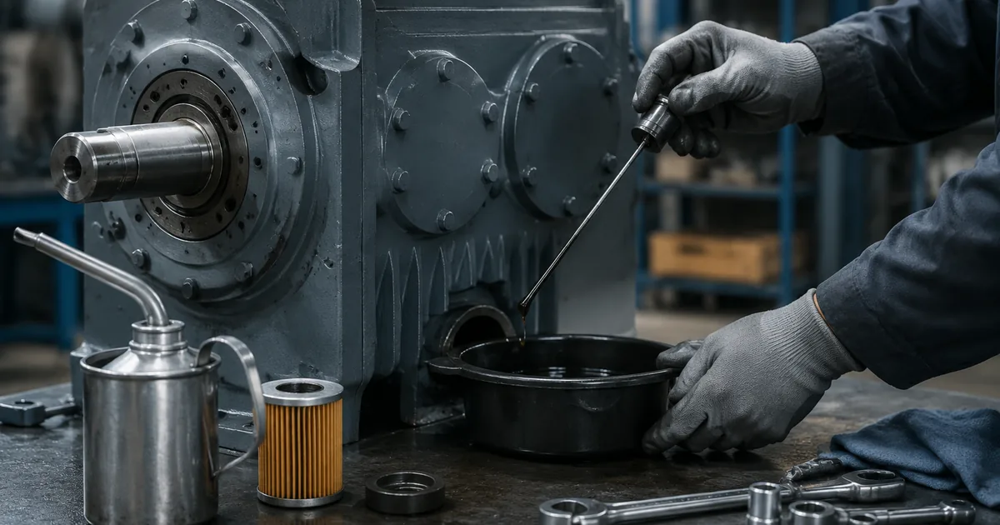

Собственное производствоПромышленные редукторы для производителей оборудования•Отгрузка по всей России•Аналоги SEW, NORD, Bonfiglioli без переделки рамы•Расчёт и КП за 15 минут•Гарантия 36 месяцевПромышленные редукторы для производителей оборудования•Отгрузка по всей России•Аналоги SEW, NORD, Bonfiglioli без переделки рамы•Расчёт и КП за 15 минут•Гарантия 36 месяцев
Главная›Блог›Монтажные положения Guomao: почему это не мелочь
Эксплуатация
Монтажные положения Guomao: почему это не мелочь
Опыт инженеров Завода Редукторов · чтение ~9 минут
Редуктор Guomao приходит с завода с определённым монтажным положением, и это не строчка в паспорте для галочки. От ориентации корпуса зависят объём заливки, расположение пробок и сапуна, а значит — доживёт ли верхняя ступень до планового ремонта. Разберём, что меняется при повороте корпуса, как это связано с сериями R, K, F, S и почему при замене на аналог ZR положение нужно указывать отдельно.
Сразу о главном. Готовой таблицы соответствия между типоразмерами Guomao и нашего ZR мы не публикуем и из каталога производителя не выводим. Взаимозаменяемость определяют присоединительные и габаритные размеры, а не совпадение крутящего момента: два редуктора с одинаковым моментом могут не сесть на одну плиту. Поэтому по этой марке подбор ведёт инженер — по шильду, фотографии узла или габаритному чертежу. Наш аналог ZR рассчитываем под конкретную задачу, стоимость — по запросу.
Что именно фиксирует монтажное положение
Монтажное положение — это ориентация корпуса относительно вертикали, заданная при заказе и продублированная на шильде. Оно определяет не геометрию, а работу системы смазки: где стоит масло, какое отверстие служит заливным, какое сливным, а какое отводится под сапун.
В каталогах принята маркировка от M1 до M6, иногда параллельно указывают B3, B5, V1, V3 — эта запись пришла от монтажных исполнений электродвигателей и обозначает то же самое. M1 — горизонтальное исполнение на лапах, M4 — вертикальное с валом вниз, остальные занимают промежуточные и боковые варианты.
Серии Guomao и их отношение к положению
Линейка Guomao, выпускаемая в Китае, включает серии R, K, F, S. У соосных и комбинированных исполнений набор допустимых положений обычно шире, у червячных — уже, потому что смазка ведомого колеса напрямую завязана на его погружение в ванну.
Поимённый ряд типоразмеров выписан из каталога производителя только там, где каталог его даёт. Там, где указан лишь диапазон, мы ряд не достраиваем: придумать несуществующий типоразмер хуже, чем его не назвать.
Для замены на ZR это означает простое правило: положение задаётся при изготовлении, а не подбирается на месте. Если в запросе указать серию Guomao, типоразмер и фактическую ориентацию корпуса, аналог придёт готовым к установке.
Признак, причина и действие при несоответствии монтажного положения
Что обнаружено
Вероятная причина
Что делать
Положение на шильде не совпадает с проектным
Заказ оформлен под другую ориентацию корпуса
Согласовать пересчёт заливки и перестановку пробок
Сапун заглушён или стоит внизу
Не снята транспортная пробка либо сапун не переставлен
Установить сапун в самую высокую точку
Уровень не по контрольной пробке
Залит объём от прежнего положения
Долить или слить до нижней кромки отверстия
Подтёки на манжетах
Перелив или сапун ниже уровня масла
Зафиксировать актом до монтажа, устранить причину
Входной вал вращается с закусыванием
Повреждение при транспортировке или неправильная сборка
Не ставить, вернуть на проверку
Объём масла: почему «долить как было» не работает
При смене положения меняется не только уровень, но и сам объём заливки. Вертикальное исполнение почти всегда требует больше масла, чем горизонтальное того же типоразмера: разбрызгивание не достаёт до верхней ступени и верхнего подшипника, и смазка должна добираться туда иначе.
Перелив не менее вреден, чем недолив. Избыток вспенивается, растут температура и давление в корпусе, масло начинает выдавливать через манжеты. Ориентируются не на «полный картер», а на контрольную пробку уровня, соответствующую конкретному положению.
Если положение пришлось изменить на объекте, порядок такой: слить масло, переставить пробки и сапун под новую ориентацию, залить объём по каталогу именно для этого положения и проверить по контрольной пробке.
Редуктор Guomao: червячный исполнение
Четыре отверстия и одна частая ошибка
В корпусе обычно четыре функциональных отверстия: заливное сверху, сливное в самой низкой точке нового положения, контрольное задаёт уровень, сапун выравнивает давление и должен стоять в самой высокой точке.
Самая распространённая ошибка при перестановке — оставить сапун на прежнем месте. Если после поворота корпуса он оказался ниже уровня масла, редуктор начнёт плеваться маслом при каждом нагреве. Внешне это выглядит как течь, хотя уплотнения исправны.

Обслуживание: проверка уровня и пробок
Приёмка и что проверить до монтажа
Приёмка занимает несколько минут и снимает большинство будущих вопросов. Сверяют положение на шильде с проектным, проверяют, что сапун установлен и не заглушён транспортной пробкой, что уровень стоит по нижнюю кромку контрольного отверстия, что на манжетах нет подтёков, а входной вал вращается ровно, без закусываний.
Если положение на шильде не совпадает с проектным, согласуют пересчёт заливки. Если сапун заглушён — меняют транспортную пробку. Если уровень не тот — доливают или сливают до нормы. Подтёки фиксируют актом до монтажа. Вал с закусыванием не ставят, а возвращают на проверку.
Какие данные собрать перед заказом
Что нужно инженеру для подбора и где это взять
Параметр
Где взять
Зачем нужен
Полное обозначение с шильда
табличка на корпусе редуктора
определяет серию Guomao и типоразмер
Мощность и обороты двигателя
шильд двигателя или паспорт привода
задаёт входную ступень и запас
Обороты на выходе
технолог или расчёт по механизму
через них считается передаточное число
Монтажное положение
по факту установки на объекте
определяет уровень масла и расположение пробок
Присоединительные размеры
замер или габаритный чертёж
главное условие взаимозаменяемости
Характер нагрузки и режим
технолог, паспорт механизма
через него выбирается сервис-фактор
Доставка, оплата и гарантия
Отгружаем по всей России транспортными компаниями, самовывоз — со склада в Челябинске. Оплата по счёту для юридических лиц, для новых клиентов возможна частичная предоплата. На изделия собственного производства ZR даём гарантию 36 месяцев и передаём паспорт с фактическими параметрами. Условия и сроки — на страницах доставки и цен: конкретную стоимость называем после подбора, потому что она зависит от исполнения, передаточного числа и комплектации двигателем.
Не уверены в подборе? Пришлите фото шильдика на zr@zavod-red.ru — инженер прочитает обозначение, сверит присоединительные размеры и пришлёт расчёт. Или соберите вариант сами в калькуляторе подбора: там задаются диапазоны по мощности, оборотам, моменту и передаточному числу.
Частые вопросы
Можно ли поставить редуктор Guomao вертикально, если заказан горизонтальный?
Только после пересчёта заливки и перестановки пробок с сапуном. Иначе верхняя ступень окажется без смазки. Правильнее заказывать под фактическое положение.
Сколько масла заливать?
Объём берётся из каталога для конкретного типоразмера и конкретного положения, а контролируется по контрольной пробке. Универсальной цифры нет.
Что будет, если сапун останется внизу?
При нагреве давление в корпусе будет выталкивать масло наружу через сапун и манжеты. Внешне это выглядит как течь, хотя уплотнения исправны.
Почему вертикальный редуктор требует больше масла?
Потому что разбрызгивание не достаёт до верхней ступени и верхнего подшипника. Иногда для этого предусматривают отдельные каналы или масляный насос.
Влияет ли положение на подбор аналога ZR?
Да, напрямую: положение задаётся при изготовлении. Укажите его в запросе вместе с обозначением — тогда аналог придёт готовым к установке.
Чем монтажное положение отличается от исполнения двигателя?
Это разные вещи с похожими обозначениями. Положение редуктора задаёт уровень масла и работу пробок, а исполнение двигателя — способ крепления и ориентацию вала.